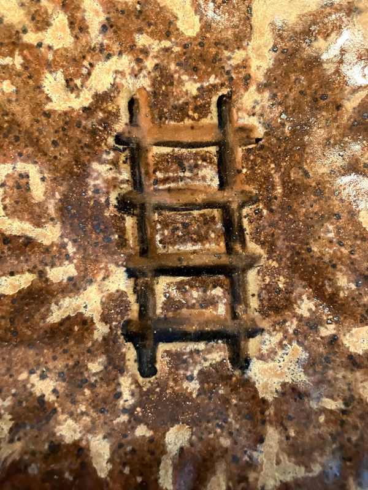

RASA
Meghana Bisineer and Charlotte Law
November 9 - December 7
The direct apprehension of an experience; juice, essence and aesthetic delight; the expansion of our sensory knowledge through taste buds and seed syllables.
Drawing from pools of knowledge and traditions related to labor, Meghana Bisineer and Charlotte Law bring a month of experimental pickle making and improvised sound to the visual and sensorial site they have built at Dream Farm Commons. Within the installation they invite audience participation in the ritual making of an embryonic and emerging world.
This sensual exhibition by artists Meghana Bisineer and Charlotte Law will be a visual site and an embodied vessel: alive with spices and sound. Under the watchful eyes of Kali Ma, a tapestry of a timeless force and aM ilaK, a five headed puppet, Dream Farm Commons will be filled with interconnecting ritual and performative objects for pounding, grating and grinding, and an altar for a growing pickle installation.
Color is everywhere, as are the pulled teeth, occasional bones, and odd body parts of the epoch we move through as we decolonize the senses and refuse the digital lie.
RASA comes from a collaborative daydream: an empowering fabulation of the event-horizon that asks: in the chaos of these days what can we savor? And, what are the rituals we can create and preserve for our future Kin?
In activating our other senses, through taste, touch, smell and sound, the intention is to awaken and share the embodied joy of working with material and explore that wordless return to the body; the ways of expressing the labor of love, and the coalescence of the human and the tool in the companionship of making.
